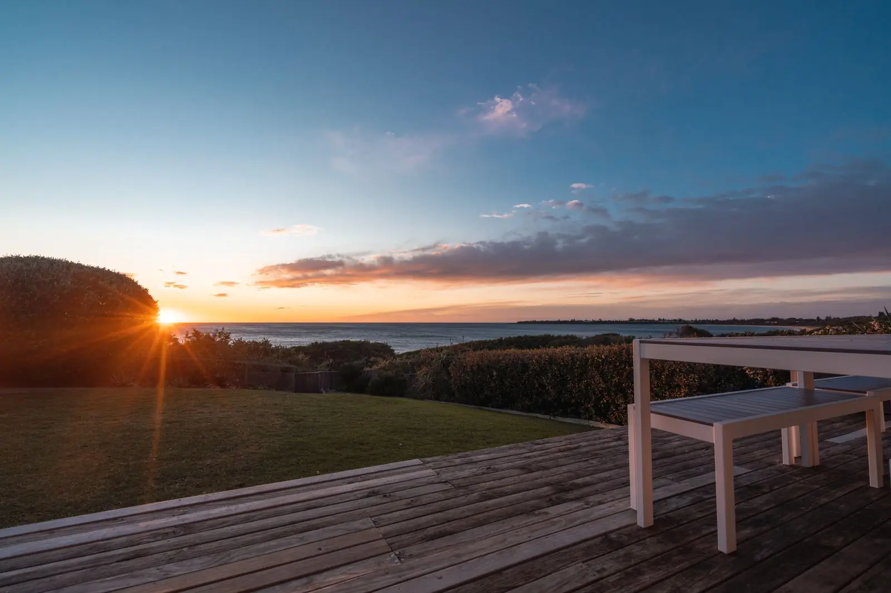
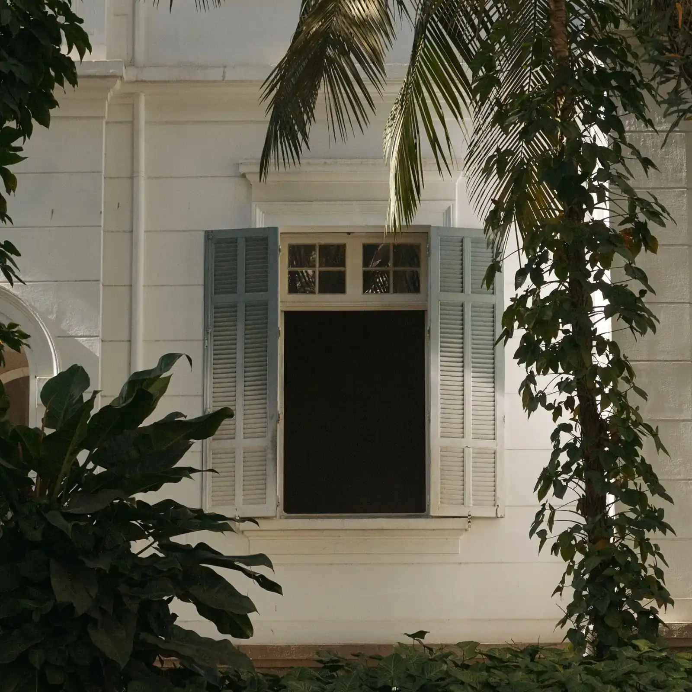
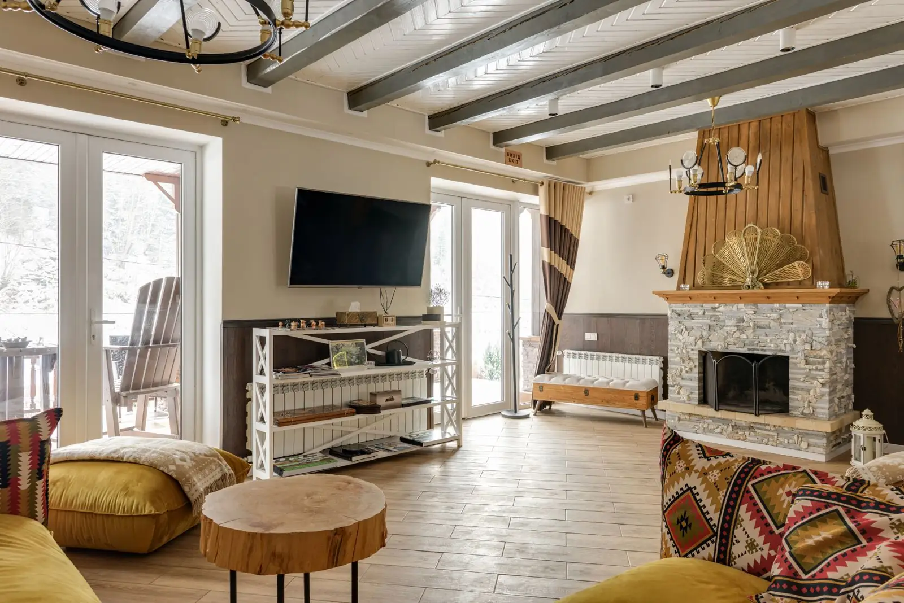
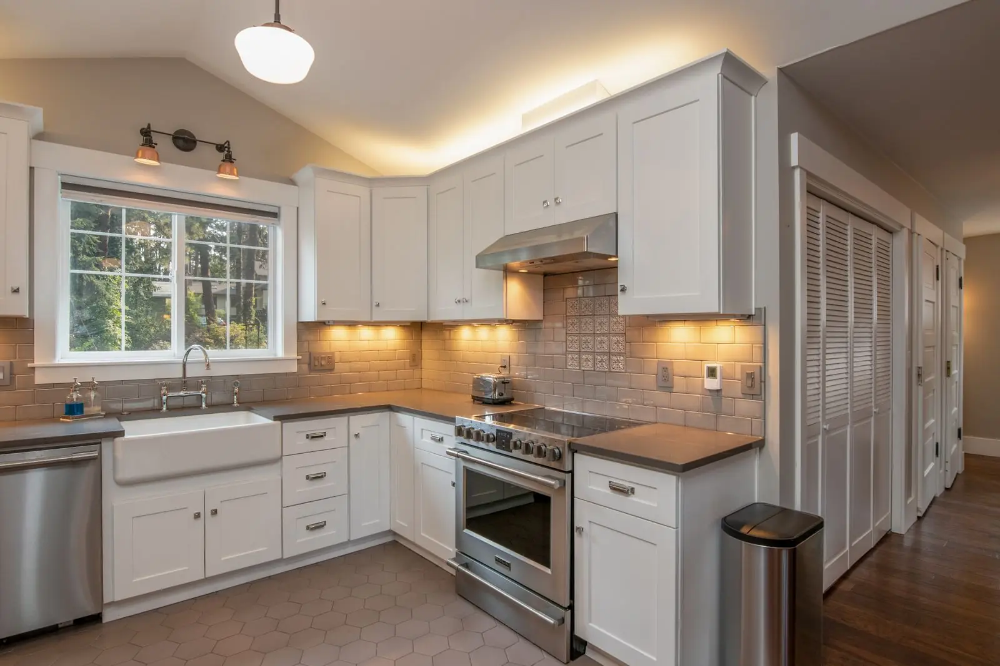
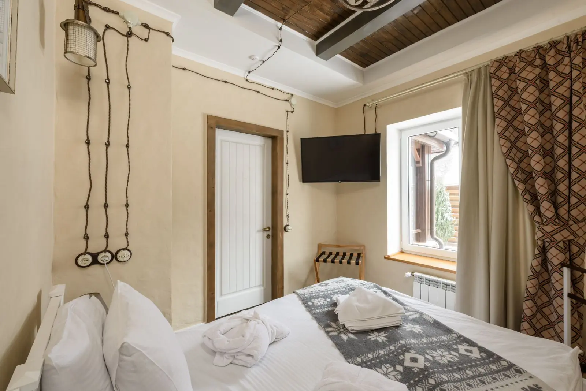
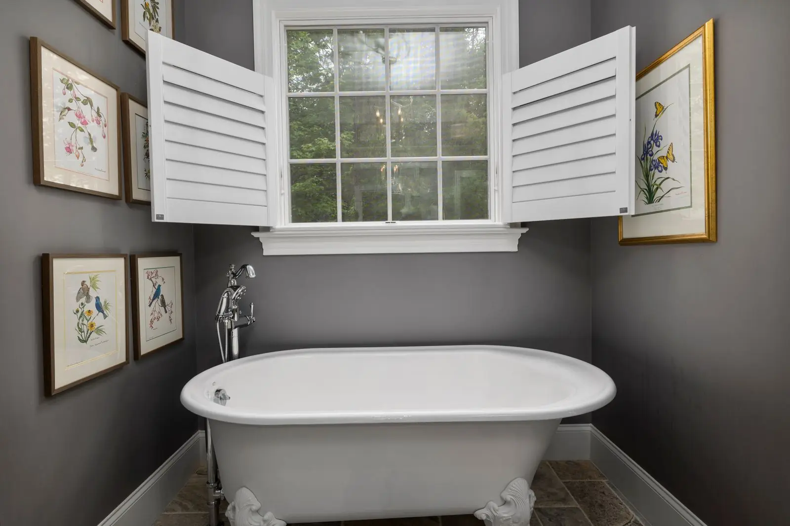

Casa açoriana restauradaSanto Antônio de Lisboa.
Casarão de 1890 restaurado a duas quadras do calçadão, com varanda para o pôr do sol.
- Disponível
- AR-0733
- 190 m²
- 3 quartos · 1 suíte
- 2 vagas
- R$ 2.150.000






01 / 07 Varanda para o pôr do sol
VÍDEO, TOUR E PLANTA
Conheça antes de ir.
Vídeo de apresentação, 14 segundos. Demonstração montada com as fotos do anúncio: no site real, entra o vídeo filmado no imóvel (com drone, quando tiver).
VISITA AO VIVO
Este imóvel ainda não tem tour 360°.
Eu mostro ao vivo.
Ligo de dentro do imóvel por chamada de vídeo, ando por todos os ambientes sem cortes, abro armários e mostro a vista de cada janela. Leva uns 20 minutos.
Agendar a visita por vídeo ↗Planta ilustrativa, com medidas aproximadas e sem escala oficial. Toque para ampliar; na tela cheia, aproxime com dois dedos ou com dois toques.
O imóvel, por dentro.
Casa açoriana de 1890 restaurada em 2022 com projeto aprovado pelo patrimônio: paredes de pedra originais, vigas de madeira aparentes e esquadrias refeitas no desenho antigo.
Três quartos, sendo uma suíte no sótão, sala com lareira, cozinha com fogão a lenha e varanda nos fundos de frente para a baía.
A duas quadras do calçadão, das ostras e dos restaurantes de Santo Antônio, num dos poucos bairros da Ilha com cara de vila.
- Restauro aprovado pelo patrimônio
- Paredes de pedra originais
- Varanda para o pôr do sol
- Fogão a lenha
Ficha técnica
- Código
- AR-0733
- Tipo
- Casa açoriana
- Área privativa
- 190 m²
- Terreno
- 480 m²
- Quartos
- 3, sendo 1 suíte
- Banheiros
- 3
- Vagas de garagem
- 2
- Posição
- Térreo e sótão
- Ano de construção
- 1890, restaurada em 2022
- Condomínio
- Não tem
- IPTU
- R$ 4.300 por ano
- Preço por m²
- R$ 11.320
O que tem perto
- Calçadão e restaurantes200 m
- Igreja de Nossa Senhora das Necessidades300 m
- Escola900 m
- Cacupé2,5 km
- Centro16 km
- Aeroporto27 km